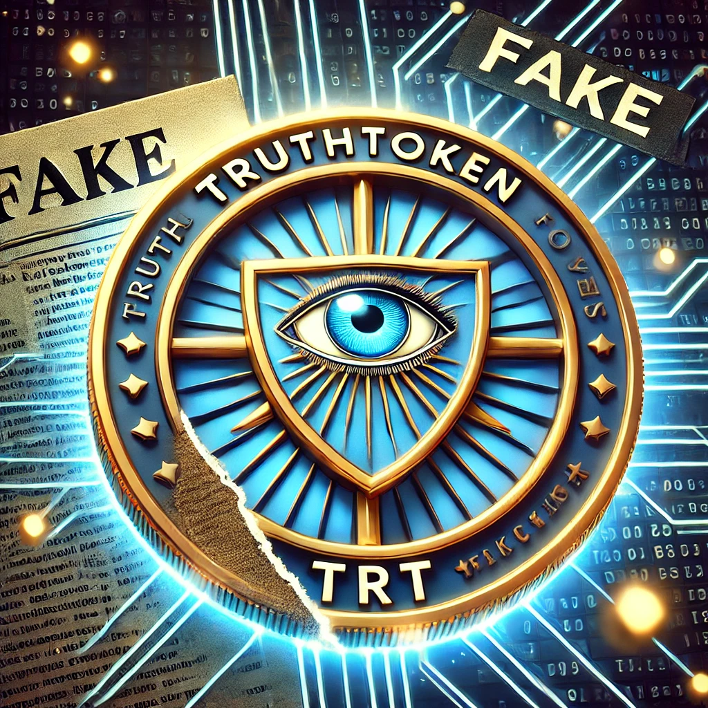

TruthToken is a blockchain-based solution to combat fake news and misinformation.
The TruthToken (TRT) Story: The revolt against misinformation
Chapter 1: A problem that cannot be ignored
In today's world, information has become the most powerful weapon. Fake news and misinformation have taken over the Internet, destroying trust, manipulating society, and undermining the foundations of truth. Fake articles, artificially created scandals and fake testimonies have overwhelmed social media and social networks, influencing political decisions, business, people's health and even their perception of reality.
Every day, millions of people read and spread lies without realizing they are becoming part of this huge disinformation machine. We needed a tool that could not just fight fakes, but do it transparently, objectively and effectively. This is how the idea of TruthToken (TRT) was born.
Chapter 2: Birth of TruthToken (TRT)
A team of independent journalists, blockchain developers, and truth activists came together to create a new system for fighting lies. They knew that traditional methods weren't working - censorship wasn't solving the problem, and fact-checking was often biased.
The solution? A decentralized information verification system based on blockchain and collective truth verification.
How does TruthToken (TRT) work?
Fact-checking on blockchain - information is captured in an immutable registry where every statement is independently verified by a community of experts and users.
Truth Voting - users can tag news stories as true, and if a majority vote confirms a fake, appropriate actions can be taken

FAQ: TruthToken (TRT)
TruthToken (TRT) is a blockchain-based solution designed to combat fake news and misinformation. By utilizing decentralized verification and community participation, TRT ensures transparency and accuracy in online information.
TruthToken addresses the widespread issue of misinformation on the internet. Fake news influences political decisions, businesses, health, and public perception. TRT provides a transparent, unbiased, and effective method to verify the truth.
TruthToken was created by a team of independent journalists, blockchain developers, and truth activists who recognized the failure of traditional methods like censorship and biased fact-checking. They developed a decentralized system to verify information collectively and transparently.
- Fact-checking on blockchain: Information is recorded in an immutable ledger where every statement undergoes independent verification by a community of experts and users.
- Truth Voting: Users can tag news as true or false. If a majority confirms misinformation, corrective actions are taken.
- Transparency and accountability: Every verified piece of information is stored on a public blockchain, ensuring no single entity can manipulate or alter the truth.
Blockchain provides a tamper-proof, decentralized platform where data cannot be altered once recorded. This ensures a transparent and objective verification process, free from centralized control or external influence
A community of experts, journalists, and users participate in verifying news articles and reports. Their collective judgment, supported by blockchain technology, determines the credibility of the information.
- Verify News: Users can participate in the truth verification process by analyzing and voting on articles.
- Stake TRT Tokens: Participants can stake tokens to support the verification process and earn rewards.
- Report Misinformation: Users can flag fake news for review by the community.
Unlike centralized fact-checkers that may have inherent biases, TruthToken uses a decentralized community-driven approach, ensuring that no single organization controls the truth. The blockchain-based system provides transparency and accountability in the verification process.
Users who actively participate in fact-checking and verification can earn TRT tokens as rewards, promoting an engaged and trustworthy community.
TruthToken will be available for purchase and trade on blockchain-based platforms, with opportunities to earn tokens through participation in the ecosystem.
Yes. Since TruthToken operates on a decentralized blockchain, no single authority can censor or manipulate the information recorded on the network.
Users cast votes on whether a news story is true or false. When a consensus is reached that a piece of information is false, it is flagged for correction and warnings are issued to prevent further spread.
TruthToken aims to become the global standard for truth verification, integrating with news platforms, social media, and government institutions to create a more transparent and truthful digital world.